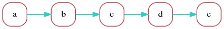
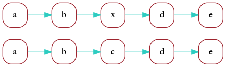
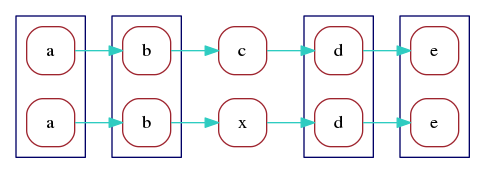
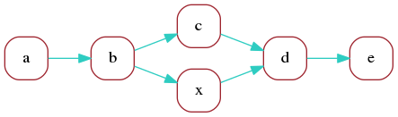
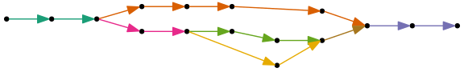
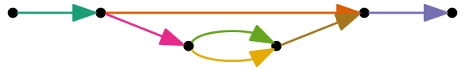

Computational methods
Oxford Nanopore reads
The Shasta assembler is being developed with the goal of assembling Oxford Nanopore reads, although it can also be used to assemble other types of long reads such as those generated by Pacific Biosciences sequencing platforms.
Oxford Nanopore reads are rapidly evolving in characteristics, and the Shasta assembler was developed targeting reads obtained using the sequencing protocols used in the nanopore group at University of California at Santa Cruz in early 2019. These reads can be characterized as follows:
- Typical length around 50 Kb, with just a few percent of coverage in reads below 10 Kb and 10% or more of coverage in reads longer than 100 Kb.
- High error rate of raw reads, with sequence identity around 90% or, equivalently, a raw read error rate around 10%.
- The dominant error mode consists of errors in the length of homopolymer runs at all lengths. Errors in short homopolymer runs (lengths 1-5) are particularly deleterious due to the high frequency of such runs.
Computational challenges
Due to their length, Oxford Nanopore reads have unique value for de novo assembly. However a successful approach needs to deal with the high error rate.
Traditional approaches to de novo assembly typically rely on selecting a k-mer length that satisfies the following:
- K-mers of the selected length are reasonably unique in the target genome. For human assemblies, this typically means k ⪆ 30.
- Most k-mers of the selected length are error free in the target reads. This means that k must be significantly less than the inverse of the error rate.
For many sequencing technolgies the above conditions are satisfied for k around 30. But for our target reads, with an error rate around 10%, most 30-mers contains errors, and therefore assembly algorithms based on using such k-mers become unfeasible.
A possible approach consists of adding a preliminary error correction step in which reads are aligned to each other and corrected based on consensus, and then presenting to the assembler the corrected reads, which hopefully have a much lower error rate. But such approaches tends to be slow, and in addition any errors made in the error correction step are permanent and cannot be fixed during the assembly process.
Read representation in the Shasta assembler
The computational techniques used in the Shasta assembler rely on representing the sequence of input reads in a way that the reduces the effect of errors on the de novo assembly process:
- The sequence of input reads is represented using run-length encoding.
- In many assembly steps, the sequence of input reads is described by using occurrences of a pre-determined subset of short k-mers (k ≈ 10 in run-encoding) called markers.
Run-length encoding of input reads
With run-length encoding, the sequence of each input read is represented as a sequence of bases, each with a repeat count that says how many times each of the bases is repeated. For example, the following read
CGATTTAAGTTAis represented as follows using run-length encoding:
CGATAGTA 11132121
Using run-length encoding makes the assembly process less sensitive to errors in the length of homopolymer runs, which are the most common type of errors in Oxford Nanopore reads. For example, consider these two reads:
CGATTTAAGTTA CGATTAAGGGTTAUsing their raw representation above, these reads can aligned like this:
CGATTTAAG--TTA CGATT-AAGGGTTAAligning the second read to the first required a deletion and two insertions. But in run-length encoding, the two reads become:
CGATAGTA 11132121 CGATAGTA 11122321The sequence portions are now identical and can be aligned trivially and exactly, without any insertions or deletions:
CGATAGTA CGATAGTAThe differences between the two reads only appear in the repeat counts:
11132121 11122321 * *
The Shasta assembler uses one byte to represent repeat counts, and as a result it only represents repeat counts between 1 and 255. If a read contains more than 255 consecutive bases, it is discarded on input. Such reads are extremely rare, and the occurrence of such a large number of repeated bases is probably a symptom that something is wrong with the read anyway.
Some properties of base sequences in run-length encoding
- In the sequence portion of the run-length encoding, consecutive bases are always distinct. If they were not, the second one would be removed from the run-length encoded sequence, while increasing the repeat count for the first one.
- With ordinary base sequences, the number of distinct k-mers of length k is 4k. But with run-length base sequences, the number of distinct k-mers of length k is 4×3k-1. This is a consequence of the previous bullet.
- The run-length sequence is generally shorter than the raw sequence, and cannot be longer. For a long random sequence, the number of bases in the run-length representation is 3/4 of the number of bases in the raw representation.
Markers
Even with run-length encoding, error in input reads are still frequent. To further reduce sensitivity to errors, and also to speed up some of the computational steps in the assembly process, the Shasta assembler also uses a read representation based on markers. Markers are occurrences in reads of a pre-determined subset of short k-mers. By default, Shasta uses for this purpose k-mers with k=10 in run-length encoding, corresponding to an average approximately 13 bases in raw read representation.
Just for the purposes of illustration, consider a description using markers of length 3 in run-length encoding. There is a total 4×32 = 36 distinct such markers. We arbitrarily choose the following fixed subset of the 36, and we assign an id to each of the kmers in the subset:
TGC | 0 |
GCA | 1 |
GAC | 2 |
CGC | 3 |
Consider now the following portion of a read in run-length representation (here, the repeat counts are irrelevant and so they are omitted):
CGACACGTATGCGCACGCTGCGCTCTGCAGC
GAC TGC CGC TGC
CGC TGC GCA
GCA CGC
Occurrences of the k-mers defined in the table above are shown
and define the markers in this read. Note that markers
can overlap. Using the marker ids defined in the table above,
we can summarize the sequence of this read portion as follows:
2 0 3 1 3 0 3 0 1This is the marker representation of the read portion above. It just includes the sequence of markers occurring in the read, not their positions.
Note that the marker representation loses information, as it is not possible to reconstruct the complete initial sequence from the marker representation. This also means that the marker representation is insensitive to errors in the sequence portions that don't belong to any markers.
The Shasta assembler uses a random choice of the k-mers to be used
as markers. The length of the markers k is controlled by
assembly parameter Kmers.k with a default value of 10.
Each k-mer is randomly choosen to be used as a marker
with probability determined by assembly parameter
Kmers.probability
with a default value of 0.1.
With these default values, the total number of distinct
markers is approximately 0.1×410×39≈7900.
The only constraint used in selecting k-mers to be used as markers is that if a k-mer is a marker, its reverse complement should also be a marker. This makes it easy to construct the marker representation of the reverse complement of a read from the marker representation of the original read. It also ensures strand symetry in some of the computational steps.
It is possible that the random selection of markers is not optimal, and it may best to select the markers based on their frequency in the input reads. This possibility has not yet been investigated.
Below is the run-length representation of a portion of a read and its markers, as displayed by the Shasta http server.

Marker alignments
The marker representation is a sequence
The marker representation of a read is a sequence in an alphabet consisting of the marker ids. This sequence is much shorter than the original sequence of the read, but uses a much larger alphabet. For example, with default Shasta assembly parameters, the marker representation is 10 times shorter than the run-length encoded read sequence, or about 13 times shorter than the raw read sequence. Its alphabet has around 8000 symbols, many more than the 4 symbols that the original read sequence uses.Because the marker representation of a read is a sequence, we can compute an alignment of two reads directly in marker representation. Computing an alignment in this way has two important advantages:
- The shorter sequences and larger alphabet make the alignment much faster to compute.
- The alignment is insensitive to read errors in the portions that are not covered by any marker.
Alignment matrix
Consider two sequences on any alphabet, sequence x with nx symbols xi (i=0,...nx-1) and sequence y with ny symbols yj (j=0,...ny-1). The alignment matrix of the two sequences, , Aij, is a nx×ny matrix with elements
Aij = δxiyj
or, in words, Aij is 1 if xi=yj and 0 otherwise. (The Shasta assembler never explicitly constructs alignment matrices except for display when requested interactively. Alignment matrices are used here just for the purpose of illustration).
In portions where the sequences x and y are perfectly aligned, the alignment matrix consists of a matrix diagonal set to 1. Most of the remaining elements will be 0, but many can be 1 just because the same symbol appears at two unrelated locations in the two sequences.
Alignment matrix in raw base representation
The picture below shows a portion of a typical alignment matrix of two reads in their representation as a raw base sequence (not the run-length encoded representation) and a computed optimal alignment. This is for illustration only, as the Shasta assembler never constructs such a matrix, except when requested interactively.

Here, elements of the alignment matrix are colored as follows:
- Red dots are alignment matrix elements that are 1 but that are not part of the computed optimal alignment.
- Green dots are alignment matrix elements that are 1 and that are part of the computed optimal alignment.
- Yellow matrix elements are alignment matrix elements that are 0 but that were computed to be part of the optimal alignment as mismatching alignment positions.
- Black or grey matrix elements are matrix elements that are 0 and that were not computed to be part of the optimal alignment. Grey is used instead of black every 10 bases to facilitate counting bases in the figure.
On average, about 25% of the matrix elements are 1, simply because the alphabet has 4 symbols. Because of the large fraction of 1 elements and because of the high error rate, it would be hard to visually locate the optimal alignment in this picture, if it was not highlighted using colors. This is emphasized by the following figure, which represents the same matrix, but with all 1 elements now colored red and all 0 elements black.

Note that the alignment matrix contains frequent square or rectangular blocks of 1 elements. They correspond to homopolymer run. A square block indicates that the two reads agree on the length of that homopolymer run, and a non-square rectangular block indicates that the two reads disagree. If we were using run-length encoding for this picture, these blocks would all collapse to a single matrix element.
Alignment matrix in marker representation
For comparison, the picture below shows a portion of the alignment matrix of two reads, in marker representation, as displayed by the Shasta http server. Here, matrix elements that are 1 are displayed in green or red. The ones in green are the ones that are part of the optimal alignment computed by the Shasta assembler - see below for more information. The grey lines are drawn 10 markers apart from each other and their only purpose is to facilitate reading the picture - the corresponding matrix elements are 0.

Because of the much larger alphabet, matrix elements that are 1 but are not part of the optimal alignment are infrequent. In addition, each alignment matrix element here corresponds on average to a 13×13 block in the alignment matrix in raw base sequence shown above. The portion of alignment matrix in marker space shown here covers about 120 markers or about 1500 bases in the original representation of the read, compared to only about 100 bases in the alignment matrix in raw representation shown above . For these reasons, the marker representation is orders of magnitude more efficient than the raw base representation when computing read alignments.
Computing optimal alignments in marker representation
To compute the optimal alignment highlighted in green, the Shasta assembler uses a simple alignment algorithm on the marker representations of the two reads to be aligned. It effectively constructs an optimal path in the alignment matrix, but using some heuristics to speed up the computation:
- The maximum number of markers that an alignment
can skip on either read is limited to a maximum,
under control of assembly parameter
Align.maxSkip(default value 30 markers, corresponding to around 400 bases when all other Shasta parameters are at their default). This reflects the fact that Oxford Nanopore reads can often have long stretches in error. In the alignment matrix shown above, there is a skip of about 20 markers (2 light grey squares) following the first 10 aligned markers (green dots) on the top left. - The maximum number of markers that an alignment
can skip at the beginning or end of a read is limited to a maximum,
under control of assembly parameter
Align.maxTrim(default value 30 markers, corresponding to around 400 bases when all other Shasta parameters are at their default). This reflects the fact that Oxford Nanopore reads often have an initial or final portion that is not usable. - To avoid alignment artifacts,
marker k-mers that are too frequent in either of the two reads
being aligned are not used in the alignment computation.
For this purpose, the Shasta assembler uses a criterion based
on absolute number of occurrences of marker k-mers in the two reads,
although a relative criterion (occurrences per Kb) may be more appropriate.
The current absolute frequency threshold is under control of assembly parameter
Align.maxMarkerFrequency(default 10 occurrences).
Finding overlapping reads
Even though computing read alignments in marker representation is fast, it still is not feasible to compute alignments among all possible pairs of reads. For a human size genome with ≈106-107 reads, the number of pairs to consider would be ≈1012-1014, and even at 10-3 seconds per alignment the compute time would be ≈109-1011 seconds, or ≈107-109 seconds elapsed time (≈102-104 days) when using 128 virtual processors.
Therefore some means of narrowing down substantially the number of pairs to be considered is essential. The Shasta assembler uses for this purpose a slightly modified MinHash scheme based on the marker representation of reads.
For a general description of the MinHash algorithm see the Wikipedia article or this excellent book chapter. In summary, the MinHash algorithm takes as input a set of items each characterized by a set of features. Its goal is to find pairs of the input items that have a high Jaccard similarity index - that is, pairs of items that have many features in common. The algorithm proceeds by iterations. At each iteration, a new hash table is created and a hash function that operates on the feature set is selected. For each item, the hash function of each of its features is evaluated, and the minimum hash function value found is used to select the hash table bucket that each item is stored in. It can be proven that the probability of two items ending up in the same bucket equals the Jaccard similarity index of the two items - that is, items in the same bucket are more likely to be highly similar than items in different buckets. The algorithm then adds to the pairs of potentially similar items all pairs of items that are in the same bucket.
When all iterations are complete, the probability that a pair of items was found at least once is an increasing function of the Jaccard similarity of the two items. In other words, the pairs found are enriched for pairs that have high similarity. One can now consider all the pairs found (hopefully a much smaller set than all possible pairs) and compute the Jaccard similarity index for each, then keep only the pairs for which the index is sufficiently high. The algorithm does not guarantee that all pairs with high similarity will be found - only that the probability of finding all pairs is an increasing function of their similarity.
The algorithm is used by Shasta with items being oriented reads (a read in either original or reverse complemented orientation) and features being consecutive occurrences of m markers in the marker representation of the oriented read. For example, consider an oriented read with the following marker representation:
18,45,71,3,15,6,21If m is selected equal to 4 (the Shasta default, controlled by assembly parameter
MinHash.m),
the oriented read is assigned the following features:
(18,45,71,3) (45,71,3,15) (71,3,15,6) (3,15,6,21)
From the picture above of an alignment matrix in marker representation, we see that streaks of 4 or more common consecutive markers are relatively common. We have to keep in mind that, with Shasta default parameters, 4 consecutive markers span an average 40 bases in run-length encoding or about 52 bases in the original raw base representation. At a typical error rate around 10%, such a portion of a read would contain on average 5 errors. Yet, the marker representation in run-length space is sufficiently robust that these common "features" are relatively common despite the high error rate. This indicates that we can expect the MinHash algorith to be effective in finding pairs of overlapping reads.
However, the MinHash algorithm has a feature that is undesirable for our purposes: namely, that the algorithm is good at finding read pairs with high Jaccard similarity index. For two sets X and Y, the Jaccard similarity index is defined as the ratio
J = |X∩Y| / |X∪Y|Because the read length distribution of Oxford Nanopore reads is very wide, it is very common to have pairs of reads with very different lengths. Consider now two reads with lengths nx and ny, with nx<ny, that overlap exactly over the entire length nx. The Jaccard similarity is in this case given by nx/ny < 1. This means that, if one of the reads in a pair is much shorter than the other one, their Jaccard similarity will be low even in the best case of exact overlap. As a result, the unmodified MinHash algorithm will not do a good job at finding overlapping pairs of reads with very different length.
For this reason, the Shasta assembler uses a small modification to the MinHash algorithm: instead of just using the minimum hash for each oriented read for each iteration, it keeps all hashes below a given threshold. Each oriented read can be stored in multiple buckets, one for each low hash encountered. This has the effect of eliminating the bias against pairs in which one read is much shorter than the other. The modified algorithm is referred to as LowHash in the Shasta source code. It is effectively equivalent to a an indexing approach in which we index all features with low hash.
The LowHash algorithm is controlled by the following assembly parameters:
-
MinHash.m(default 4): the number of consecutive markers that define a feature. -
MinHash.hashFraction(default 0.01): The fraction of hash values that count as "low". -
MinHash.minHashIterationCount(default 10): The number of iterations. -
MinHash.maxBucketSize(default 10): The maximum number of items for a bucket to be considered. Buckets with more than this number of items are ignored. The goal of this parameter is to mitigate the effect of common repeats, which can result in buckets containing large numbers of unrelated oriented reads. -
MinHash.minFrequency(default 2): the number of times a pair of oriented reads has to be found to be considered and stored as a possible pair of overlapping reads.
Initial assembly steps
Initial steps of a Shasta assembly proceed as follows.
If the assembly is setup for
best performance
(--memoryMode filesystem --memoryBacking 2M
if using the Shasta executable), all data structures
are stored in memory, and no disk activity takes
place except for initial loading of the input reads,
storing of assembly results, and storing a small number
of small files with useful summary information.
- Input reads are read from Fasta files and converted
to run-length representation. Read shorter
than
Reads.minReadLengthbases (default 10000) are discarded. Reads that contain bases with repeat counts greater than 255 are also discarded. This is a consequence of the fact that repeat counts are stored using one byte, and therefore there would be no way to store such reads. Reads with such long repeat counts are extremely rare, however, and when they occur they are of suspicious quality. - K-mers to be used as markers are randomly selected.
- Occurrences of those marker k-mers in all oriented reads are found.
- The LowHash algorithm finds candidate pairs of overlapping oriented reads.
- A marker alignment is computed for each candidate pair of oriented reads.
If the marker alignment contains a minimum number of aligned markers,
the pair is stored as an aligned pair. The minimum number
of aligned markers is controlled by assembly parameter
Align.minAlignedMarkerCount.
Read graph
Using the methods covered so far, an assembly has created a list of pairs of oriented reads, each pair having a plausible marker alignment. How to use this type of information for assembly is a classical problem with a standard solution (Myers, 2005), the string graph.
However, the prescriptions in the Myers paper cannot be directly used here, the main reason being that the process used to find pairs of overlapping reads is probabilistic and does not guarantee that all overlapping pairs will be found. Direct application of the Myers approach in this context results in unnecessary breakages in continuity.
The approach currently used in the Shasta assembler is very simple, perhaps simplistic, and does not extract all the available information. As a result, contiguity of assembled sequence is not the best that can be achieved from the data. Improvements are certainly possible here and will hopefully be made in future releases. Despite this shortcoming, the current implementation is still a useful tool for de novo assembly of Oxford Nanopore reads.
In the current simple approach, the Shasta assembler creates an undirected graph, the Read Graph, in which each vertex represents an oriented read (that is, a read in either original orientation or reverse complemented), and an undirected edge between two vertices is created if we have found an alignment between the corresponding oriented reads.
However, the read graph as constructed in this way suffers
from high connectivity in repeat regions.
Therefore, the Shasta assembler only keeps a
k-Nearest-Neighbor subset of the edges.
That is, for each vertex (oriented read)
we only keep the k edges with the best alignments
(greatest number of aligned markers).
The number of edges kept
for each vertex is controlled by assembly parameter
ReadGraph.maxAlignmentCount,
with a default value of 6.
Note that, despite the k-Nearest-Neighbor subset,
it remains possible for a vertex to have degree
more than k.
Note that each read contributes two vertice to the read graph, one in its original orientation, and one in reverse complemented orientation. Therefore the read graph contains two strands, each strand at full coverage. This makes it easy to investigate and potentially detect erroneous strand jumps that would be much less obvious if using approaches with one vertex per read.
An example of a portion of the read graph, as displayed
by the Shasta http server, is shown here.

Even though the graph is undirected, edges that correspond to overlap alignments are drawn with an arrow that points from the leftmost oriented read to the rightmost one. Edges that correspond to containment alignments are drawn in red and without an arrow. Vertices are drawn with area proportional to the length of the corresponding reads.
The linear structure of the read graph successfully reflects the linear arrangement of the input reads and their origin on the genome being assembled.
However, deviations from the linear structure can
occur in the presence of long repeats,
typically for high similarity segment duplications:

The current Shasta implementation does not attempt to remove the obviously incorrect connections. This results in unnecessary breaks in assembly contiguity. Despite this, Shasta assembly contiguity is adequate and comparable to what other, less performant long read assemblers achieve. It is hoped that future Shasta releases will do a better job at handling these situations.
Marker graph
Consider a read whose marker representation is:
a b c d eWe can represent this read as a directed graph that the describes the sequence in which its markers appear:

This is not very useful but illustrates the simplest form of a marker graph as used in the Shasta assembler. The marker graph is a directed graph in which each vertex represents a marker and each edge represents the transition between consecutive markers. We can associate sequence with each vertex and edge of the marker graph:
- Each vertex is associated with the sequence of the corrersponding marker.
- If the markers of the source and target vertex of an edge do not overlap, the edge is associated with the sequence intervening between the two markers.
- If the markers of the source and target vertex of an edge do overlap, the edge is associated with the overlapping portion of the marker sequences.
Consider now a second read with the following marker
representation, which differs from the previous one
just by replacing marker c with x:
a b x d e
The marker graph for the two reads is:

In the optimal alignment of the two reads, markers
a, b, d, e are aligned. We can redraw the marker graph
grouping together vertices that correspond to aligned markers:

Finally, we can merge aligned vertices to obtain a marker graph describing the two aligned reads:

Here, by construction each vertex still has a unique
sequence associated with it - the common sequence
of the markers that were merged
(however the corresponding repeat counts
can be different for each contributing read).
An edge, on the other hand, can have different sequences
associated with it, one corresponding to each
of the contributing reads.
In this example, edges a->b
and d->e have two contributing reads,
which can each have distinct sequence between
the two markers.
We call coverage of a vertex or edge the number of reads "contributing"
to it. In this example, vertices a, b, d, e have coverage 2
and vertices c, x have coverage 1.
Edges a->b
and d->e have coverage 2, and the remaining edges have coverage 1.
The construction of the marker graph was illustrated above for two reads, but the Shasta assembler constructs a global marker graph which takes into account all oriented reads:
- The process starts with a distinct vertex for each marker of each oriented read. Note that at this stage the marker graph is large (≈ 2×1010 vertices for a human assembly using default assembly parameters).
- For each marker alignment corresponding to an edge of the read graph, we merge vertices corresponding to aligned markers.
- Of the resulting merged vertices, we remove those whose
coverage in too low or two high, indicating that the contributing
reads or some of the alignments involved are probably in error.
This is controlled by assembly parameters
MarkerGraph.minCoverage(default 10) andMarkerGraph.maxCoverage(default 100), which specify the minimum and maximum coverage for a vertex to be kept. - Edges are created. An edge
v0->v1is created if there is at least a read contributing to bothv0andv1and for which all markers intervening betweenv0andv1belong to vertices that were removed.
Given the large number of initial vertices involved, this computation is not trivial. To allow efficient computation in parallel on many threads, a lock-free implementation of the disjoint data set data structure, as first described by Anderson and Woll (1991), Anderson and Woll (1994), is used for merging vertices. Some code changes were necessary to permit large numbers of vertices, as the initial implementation by Wenzel Jakob only allowed for 32-bit vertex ids.
A portion of the marker graph, as displayed by the Shasta http server, is shown here:

Each vertex, shown in green, contains a list of the oriented reads the contribute to it. Each oriented read is labeled with the read id (a number) followed by "-0" for original orientation and "-1" for reverse complemented orientation. Each vertex is also labeled with the marker sequence (run-length encoded). Edges are drawn with an arrow whose thickness is proportional to edge coverage, and labeled with the sequence contributed by each read. In edge labels, a sequence consisting of a number indicates the number of overlapping bases between adjacent markers.
On as larger scale and with less detail, a typical portion of the marker graph looks like this:

Here, each vertex is drawn with size proportional to its coverage. Edge arrows are again displayed with thickness porportional to edge coverage. The marker graph has a linear structure with a dominant path and side branches due to errors.
Assembly graph
The Shasta assembly process also uses a compact representation of the marker graph, called the assembly graph, in which each linear sequence of edges is replaced by a single edge. For example, this marker graph

can be represented as an assembly graph as follows. Colors were chosen to indicate the correspondance to marker graph edges:

The length of an edge of the assembly graph is defined as the number of marker graph edges that it corresponds to. For each edge of the assembly graph, an average coverage is also computed, by averaging the coverage of the marker graph edges it corresponds to.
Using the marker graph to assemble sequence
The marker graph is a partial description of the multiple sequence alignment between reads and can be used to assemble consensus sequence. One simple way to do that is to only keep the "dominant" path in the graph, and then move on that path from vertex to edge to vertex, assembling run-length encoded sequence as follows:
- On a vertex, all reads have the same sequence, by construction: the marker sequence associated with the vertex. There is trivial consensus among all the reads contributing to a vertex, and the marker sequence can be used directly as the contribution of the vertex to assembled sequence.
- For edges, there are two possible situations plus a hybrid case:
- 2.1. If the adjacent markers overlap, in most cases all contributing reads have the same number of overlapping bases between the two markers, and we are again in a situation of trivial consensus, where all reads contribute the same sequence, which also agrees with the sequence of adjacent vertices. In cases where not all reads are in agreement on the number of overlapping bases, only reads with the most frequent number of overlapping bases are taken into account.
- 2.2. If the adjacent markers don't overlap, then each read can have a different sequence between the two markers. In this situation, we compute a multiple sequence alignment of the sequences and a consensus using the Spoa library. The multiple sequence alignment is computed constrained at both ends, because all reads contributing to the edge have, by construction, identical markers at both sides.
- 2.3. A hybrid situation occasionally arises, in which some reads have the two markers overlapping, and some do not. In this case we count reads of the two kinds and discard the reads of the minority kind, then revert to one of the two cases 2.1 or 2.2 above.
This is the process used for sequence assembly by the current Shasta implementation. It requires a process to select and define dominant paths, which is described in the next section. It is algorithmically simple, but its main shortcoming is that it does not use for assembly reads that contribute to the abundant side branches. This means that coverage is lost, and therefore the sequence of assembled accuracy is not as good as it could be if all available coverage was used. Means to eliminate this shortcoming and use information from the side branches of the marker graph could be a subject of future work on the Shasta assembler.
Assembling repeat counts
The process described above works with run-length encoded sequence and therefore assembles run-length encoded sequence. The final step to create raw assembled sequence is to compute the most likely repeat count for each sequence position in run-length encoding. In Shasta 0.1.0 this was done done by choosing as the most likely repeat count the one that appears the most frequently in the reads that contributed to each assembled position.
The latest version of the Shasta assembler supports three different options
for that, under control of command line option
--Assembly.consensusCaller:
--Assembly.consensusCaller Modalrequests the same algorithm used in Shasta 0.1.0, that is, the most frequent repeat count seen at each base position is used in the assembly.--Assembly.consensusCaller Medianrequests an algorithm that stores in the assembly the median repeat count seen at each base position.--Assembly.consensusCaller Bayesian:namerequests a Bayesian algorithm to determine the most likely repeat count.namecan be one of the following:- One of the following built-in Bayesian models:
guppy-2.3.1-ato use a Bayesian model optimized for the Guppy 2.3.1 base caller.guppy-2.3.5-a(the default) to use a Bayesian model optimized for the Guppy 2.3.5 base caller.guppy-3.0.5-ato use a Bayesian model optimized for the Guppy 3.0.5 base caller.guppy-3.4.4-ato use a Bayesian model optimized for the Guppy 3.4.4 base caller.guppy-3.6.0-ato use a Bayesian model optimized for the Guppy 3.6.5 base caller.r10-guppy-3.4.8-ato use a Bayesian model optimized for r10 reads and the Guppy 3.4.8 base caller.
- The absolute path of a configuration file
describing the Bayesian model to be used.
A relative path is not accepted.
Sample configuration files are available in
shasta/conforshasta-install/conf. They are namedSimpleBayesianConsensusCaller-*.csv.
- One of the following built-in Bayesian models:
--Assembly.consensusCaller Bayesian:guppy-2.3.5-a.
Some testing showed a significant decrease of false positive indels
in assembled sequence compared to Shasta 0.1.0 behavior, corresponding to
--Assembly.consensusCaller Modal. This testing was done
for reads called using Guppy 2.3.5. However even using
--Assembly.consensusCaller Bayesian:guppy-2.3.1-a
resulted in significant improvement over
--Assembly.consensusCaller Modal, indicating
that the Bayesian model is somewhat resilient to
discrepancies between the reads used to construct the Bayesian model
and the reads being assembled.
Testing also showed that
--Assembly.consensusCaller Median is generally inferior to
--Assembly.consensusCaller Modal.
It is also possible that the quality of assembled sequence could be improved using a future base caller that also produces run-length encoded read sequence, plus a probability distribution of the repeat counts at each position. The base caller is in a unique position to do this thanks to its access to signal information. Such information could be used to implement in the Shasta assembler a Bayesian model for repeat counts that does not require calibration and directly uses signal duration information available to the base caller. Some work in this direction is in progress, including a new experimental run-length base caller under development at Oxford Nanopore, Runnie.
Selecting assembly paths
The sequence assembly procedure described in the previous section
can be used to assemble sequence for any path in the marker graph.
This section describes the selection of paths for assembly
in the current Shasta implementation.
This is done by a series of steps that "remove" edges
(but not vertices) from the marker graph until the
marker graph consists mainly of linear sections
which can be used as the assembly paths.
For speed, edges are not actualy removed but just marked
as removed using a set of flag bits allocated for this
purpose in each edge.
However, the description below will use the loose term remove
to indicate that an edge was flagged as removed.
This process consists of the following three steps, described in more detail in the following sections:
- Approximate transitive reduction of the marker graph.
- Pruning of short side branches (leaves).
- Removal of bubbles and super-bubbles.
The last step, removal of bubbles and superbubbles, is consistent with Shasta's current assembly goal which is to compute a mostly haploid assembly, at least on short scales. It will undergo substantial changes in future releases, with the goal of enabling phased diploid assembly.
Approximate transitive reduction of the marker graph
The goal of this step is to eliminate the side branches in the marker
graph, which are the result of errors.
Despite the fact that
the number of side branches is substantially reduced thanks to the use of
run-length encoding, side branches are still abundant.
This step uses an approximate transitive reduction of the marker graph which only
considers reachability up to a maximum distance,
controlled by assembly parameter
MarkerGraph.maxDistance
(default 30 marker graph edges).
Using a maximum distance makes sure that the process remains computationally affordable,
and also has the advantage of not removing long-range edges in the marker graph,
which could be significant.
In detail, the process works as follows.
In this description, the edge being considered for removal
is the edge v0→v1 with source vertex v0
and target vertex v1.
The first two steps are not really part of the transitive reduction
but are performed by the same code for convenience.
- All edges with coverage less than or equal to
MarkerGraph.lowCoverageThresholdare unconditionally removed. The default value for this assembly parameter is 0, so this step does nothing when using default parameters. - All edges with coverage 1
and for which the only supporting read has a large marker skip
are unconditionally removed.
The marker skip of an edge, for a given read, is defined as the distance
(in markers) between the
v0marker for that read and thev1marker for the same read. Most marker skips are small, and a large skip is indicative of an artifact. Keeping those edges could result in assembly errors. The marker skip threshold is controlled by assembly parameterMarkerGraph.edgeMarkerSkipThreshold(default 100 markers). - Edges
with coverage greater than
MarkerGraph.lowCoverageThreshold(default 0) and less thanMarkerGraph.highCoverageThreshold(default 256), and that were not previously removed, are processed in order of increasing coverage. Note that with the default values of these parameters all edges are processed, because edge coverage is stored using one byte and therefore can never be more than 255 (it is saturated at 255). For each edgev0→v1, a Breadth-First Search (BFS) in the marker graph is performed starting at source vertexv0and with a limit ofMarkerGraph.maxDistance(default 30) edges distance from vertexv0. The BFS is constrained to not use edgev0→v1. If the BFS reachesv1, indicating that an alternative path fromv0tov1exists, edgev0→v1is removed. Note that the BFS does not use edges that have already been removed, and so the process is guaranteed not to affect reachability. Processing edges in order of increasing coverage makes sure that low coverage edges are more the most likely to be removed.
When the transitive reduction step is complete, the marker graph consists mostly of linear sections composed of vertices with in-degree and out-degree one, with occasional side branches and bubbles or superbubbles, which are handled in the next two phases described below.
Pruning of short side branches (leaves)
At this stage, a few iterations of pruning are done
by simply removing, at each iteration,
edge v0→v1 if
v0 has in-degree 0 (that is, is a backward-pointing leaf)
or v1 has out-degree 0 (that is, is a forward-pointing leaf).
The net effect is that all side branches of length
(number of edges)
at most equal to the number of iterations are removed.
This leaves the leaf vertex isolated, which causes no problems.
The number of iterations is controlled
by assembly parameter
MarkerGraph.pruneIterationCount
(default 6).
Removal of bubbles and superbubbles
The marker graph now consists of mostly linear section with occasional bubbles or superbubbles. Most of the bubbles and superbubbles are caused by errors, but some of those are due to heterozygous loci in the genome being assembled. Bubbles and superbubbles of the latter type could be used for separating haplotypes (phasing) - a possibility that will be addressed in future Shasta releases. However, the goal of the current Shasta implementation is to create a haploid assembly at all scales but the very long ones. Accordingly, bubbles and superbubbles at short scales are treated as errors, and the goal of the bubble/superbubble removal step is to keep the most significant path in each bubble or superbubble.
The figures below show typical examples of a bubble and superbubble in the marker graph.


The bubble/superbubble removal process is iterative.
Early iterations work on short scales, and late iterations
fork on longer scales.
Each iteration uses a length threshold
that controls the maximum number of marker graph edges for
features to be considered for removal.
The value of the threshold for each iteration
is specified using assembly parameter
MarkerGraph.simplifyMaxLength,
which consists of a comma-separated string of integer
numbers, each specifying the threshold for one iteration
in the process. The default value is
10,100,1000, which means that three iterations
of this process are performed.
The first iteration uses a threshold of 10 marker graph edges,
and the second and third iterations
use length thresholds of 100 and 1000 marker graph edges, respectively.
The last and largest of the threshold values used
determines the size of the smallest bubble or superbubble
that will survive the process.
The default 1000 markers is equivalent to roughly 13 Kb.
To suppress more bubble/superbubbles, increase
the threshold for the last iterarion.
To see more bubbles/superbubbles, decrease
the length threshold for the last iteration, or remove the last iteration entirely.
The goal of the increasing threshold values is to work
on small features at first, and on larger features in the later iterations.
The best choice of
MarkerGraph.simplifyMaxLength
is application dependent. The default value
is a reasonable compromise useful if one desires
a mostly haploid assembly with just some large heterozygous features.
Each iteration consists of two steps. The first removes bubbles and the second removes superbubbles. Only bubbles/superbubbles consisting of features shorter than the threshold for the current iteration are considered:
- Bubble removal
- An assembly graph corresponding to the current marker graph is created.
- Bubbles are located in which the length of all branches (number of marker graph edges) is no more than the length threshold at the current iteration. In the assembly graph, a bubble appears as a set of parallel edges (edges with the same source and target).
- In each bubble, only the assembly graph edge with the highest average coverage is kept. Marker graph edges corresponding to all other assembly graph edges in the bubble are flagged as removed.
- Superbubble removal:
- An assembly graph corresponding to the current marker graph is created.
- Connected components of the assembly graph are computed, but only considering edges below the current length threshold. This way, each connected component corresponds to a "cluster" of "short" assembly graph edges.
- For each cluster, entries into the cluster are located. These are vertices that have in-edges from a vertex outside the cluster. Similarly, exists are located (vertices that have out-edges outside the cluster).
- For each entry/exit pair, the shortest path is computed. However, in this case the "length" of an assembly graph edge is defined as the inverse of its average coverage - that is, the inverse of average coverage for all the contributing marker graph edges.
- Edges on each shortest path are marked as edges to be kept.
- All other edges internal to the cluster are removed.
When all iterations of bubble/superbubble removal are complete, the assembler creates a final version of the assembly graph. Each edge of the assembly graph corresponds to a path in the marker graph, for which sequence can be assembled using the method described above. Note, however, that the marker graph and the assembly graph have been constructed to contain both strands. Special care is taken during al transformation steps to make sure that the marker graph (and therefore the assembly graph) remain symmetric with respect to strand swaps. Therefore, the majority of assembly graph edges come in reverse complemented pairs, of which we assemble only one. It is however possible but rare for an assembly graph to be its own reverse complement.
Towards phased diploid assembly
The current strategy of removing bubbles and superbubbles on small scales
is a reasonable compromise for a haploid assembly.
The extent to which bubbles are discarded or kept
can be controlled using assembly parameter
MarkerGraph.simplifyMaxLength
as described
above.
It is, however, possible to use bubbles in the marker graph to assign reads to haplotypes and therefore enable a true diploid assembly. This possibility will be investigated in future Shasta work, but here is a possible outline:
- Creation of the marker graph would work as described, up to and excluding the bubble/superbubble removal process.
- Bubbles in which all branches have good coverage are likely to correspond to heterozygous loci and can be used to assign reads to haplotypes.
- Read graph edges between reads corresponding to distinct haplotypes would be removed.
- The marker graph would then be recreated from scratch, with the result that haplotypes would now be separated, at least to the extent allowed by existing heterozygous loci (e. g. long homozygous stretches could still have both haplotypes collapsed).
- This process would not only help separate haplotypes, but it would also provide better separation of distinct copies of segment duplications, potentially resulting in an assembly that is not only phased, but also more contiguous.
High performance computing techniques
The Shasta assembler is designed to run on a single machine with an amount of memory sufficient to hold all of its data structures (1-2 TB for a human assembly, depending on coverage). All data structures are memory mapped and can be set up to remain available after assembly completes. Note that using such a large memory machine does not substantially increase the cost per CPU cycle. For example, on Amazon AWS the cost per virtual processor hour for large memory instances is no more than twice the cost for laptop-sized instances.
There are various advantages to running assemblies in this way:
- Running on a single machine simplifies the logistics of running an assembly, versus for example running on a cluster of smaller machines with shared storage.
- No disk input/output takes place during assembly, except for loading the reads in memory and writing out assembly results plus a few small files containing summary information. This eliminates performance bottlenecks commonly caused by disk I/O.
- Having all data structures in memory makes it easier and more efficient to exploit parallelism, even at very low granularity.
- Algorithm development is easier, as all data are immediately accessible without the need to read files from disk. For example, it is possible to easily rerun a specific portion of an assembly for experimentation and debugging without any wait time for data structures to be read from disk.
- When the assembler data structures are set up to remain in memory after the assembler completes, it is possible to use the Python API or the Shasta http server to inspect and analyze an assembly and its data structures (for example, display a portion of the read graph, marker graph, or assembly graph).
- For optimal performance, assembler data structures can be mapped to
Linux 2 MB pages (
huge pages
). This makes it faster for the operating system to allocate and manage the memory, and improves TLB efficiency. Using huge pages mapped on thehugetlbfsfilesystem (Shasta executable options--memoryMode filesystem --memoryBacking 2M) can result in a significant speed up (20-30%) for large assemblies. However it requires root privilege viasudo.
To optimize performance in this setting, the Shasta assembler uses various techniques:
-
In most parallel steps, the division of work among threads
is not set up in advance but decided dynamically
(
Dynamic load balancing
). As a thread finishes a piece of work assigned to it, it grabs another chunk of work to do. The process of assigning work items to threads is lock-free (that is, it uses atomic memory primitives rather than mutexes or other synchronization methods provided by the operating system). - Most large memory allocations are done via
mmapand can optionally be mapped to Linux 2 MB pages. The Shasta code includes a C++ class for conveniently handling these large memory-mapped regions as C++ containers with familiar semantics (class shasta::MemoryMapped::Vector). - In situations where a large number of small vectors are required,
a two-pass process is used (
class shasta::MemoryMapped::VectorOfVectors). In the first pass, one computes the length of each of the vectors. A single large area is then allocated to hold all of the vectors contiguously, together with another area to hold indexes pointing to the beginning of each of the short vectors. In a second pass, the vectors are then filled. Both passes can be performed in parallel and are entirely lock-free. This process eliminates memory allocation overhead that would be incurred if each of the vectors were to be allocated individually.
Thanks to these techniques, Shasta achieves close to 100% CPU utilization during its parallel phases, even when using large numbers of threads. However, a number of sequential phases remain, which typically result in average CPU utilization during a large assembly around 70%. Some of these sequential phases can be parallelized, which would result in increased average CPU utilization and improved assembly performance.
As of Shasta release 0.1.0, a typical human assembly at coverage 60x
runs in about 6 hours on a x1.32xlarge AWS instance,
which has 64 cores (128 virtual CPUs) and 1952 GB of memory.
See here for information on maximizing assembly performance.